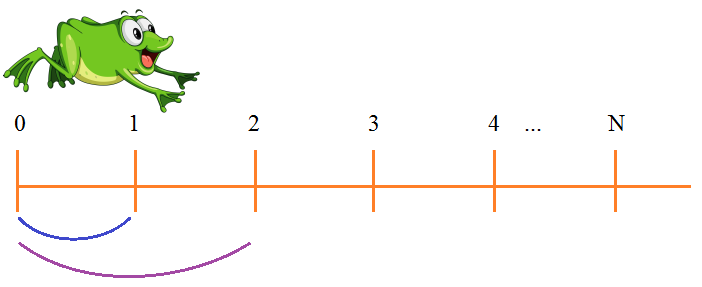

Подвиг 7. Лягушка прыгает вперед и может скакнуть либо на одно деление, либо сразу на два. Наша задача определить количество вариантов маршрутов, которыми лягушка может достичь риски под номером N (натуральное число N подается на вход программе).

Решать задачу следует с применением рекурсивной функции. Назовем ее get_path. Алгоритм решения следующий. Рассмотрим, например, риску под номером 4. Очевидно, в нее лягушка может скакнуть либо с риски номер 2, либо с риски номер 3. Значит, общее число вариантов перемещений лягушки можно определить как:
get_path(4) = get_path(3) + get_path(2)Аналогично будет справедливо и для любой риски N:
get_path(N) = get_path(N-1) + get_path(N-2)А начальные условия задачи, следующие:
Реализуйте такую рекурсивную функцию, которая должна возвращать количество вариантов перемещений лягушки для риски под номером N.
Вызовите эту функцию для введенного числа N и отобразите результат на экране.
Sample Input:
7
Sample Output:
21